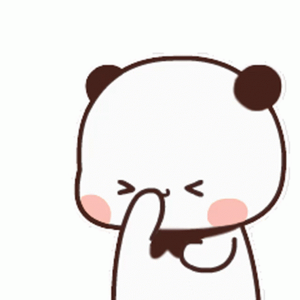

DORR CIEE KENA PRANK WKWK, TAP LOVENYA



Tau kaga 3 Oktober hari apa? pasti ga tau ishh ishh
Happy National Boyfriend Day Gantengku
idk kamu bakal anggap lebay atau ga, tapi aku selalu pengen ngerayain kamu apapun itu
makasih ya udah lahir didunia ini dan bikin hidup aku penuh warna baru
aku beruntung banget tau punya kamu, sosok pasangan sempurna yang aku pikir ga akan pernah aku temuin
kamu aku larang pergi ninggalin aku, kalau kamu pergi aku nangis pokoknya
tolong kita usahain hubungan ini sama sama, sampe selamanya kaya yang kamu bilang ya?
udah ah itu aja aku bingung hehe
Klik untuk Geser!
I Love You so muchh and i'm so glad that you are in my life, because you made it so much better
from : pacarmu ehehe